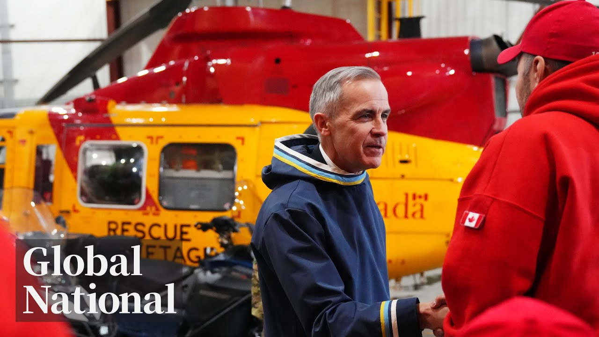

【全球国家：2025年6月9日 | 加拿大新的国防开支目标将花费多少？】
Summary: A 17-year-old valedictorian, Van Bernard, advocates for accessibility and inclusivity, inspiring others despite challenges, and is recognized with a Terry Fox Humanitarian Award.
摘要： 17岁的毕业班代表范·伯纳德倡导无障碍和包容性，尽管面临挑战仍激励他人，并荣获特里·福克斯人道主义奖。

⏱️ Estimated Reading Time: 34 min
📚 六级生词 📚 雅思生词 📚 托福生词 📚 专八生词 📚 SAT生词 📚 考研生词 📚 GRE生词 📚 高考生词 📚 视频里的生词
[Music] On this Monday night, military money.
[音乐] 在这个周一晚上，军事资金问题成为焦点。
Canada's bold pledge to hit NATO spending targets sooner.
加拿大大胆承诺提前达到北约支出目标。
If we want a more reliable world, we need a stronger Canada.
如果我们想要一个更可靠的世界，我们需要一个更强大的加拿大。
The government's plan to cough up the cash and rely less on the US.
政府计划拿出资金并减少对美国的依赖。
Angry protests in Los Angeles over immigration rates.
洛杉矶爆发针对移民政策的愤怒抗议。
They're bad people.
他们是坏人。
The battle brewing between President Trump and California officials.
特朗普总统与加州官员之间的冲突正在酝酿。
The Competition Bureau delivers a lawsuit to Door Dash.
竞争局向Door Dash提起诉讼。
Why the company is accused of misleading customers.
该公司为何被指控误导客户。
Plus, an extraordinary Nova Scotia teenagers fighting spirit and advocacy.
此外，新斯科舍省一位非凡青少年的斗争精神和倡导行动。
People with disabilities are contributors to society.
残疾人是社会的贡献者。
We are just regular people.
我们只是普通人。
one recipient of this year's prestigious Terry Fox humanitarian award.
今年著名的特里·福克斯人道主义奖得主之一。
Global National with Donna Fzen.
这里是Donna Fzen主持的《全球国家》。
Good evening and thanks for joining us.
晚上好，感谢您的收看。
The prime minister is promising the biggest increase in Canada's defense spending in decades.
总理承诺加拿大将实现数十年来最大幅度的国防支出增长。
calling the world dangerous and divided.
称世界正处于危险和分裂之中。
Mark Carney now says Canada will reach the NATO target of 2% of GDP spent on defense by the end of this year and will do it by reducing our dependence on the US.
马克·卡尼表示，加拿大将在今年年底前达到北约国防支出占GDP 2%的目标，并通过减少对美国的依赖来实现这一目标。
As the world grows more dangerous, we will secure Canada.
随着世界变得更加危险，我们将确保加拿大的安全。
And through these efforts, we will also create tens of thousands of high-paying jobs right here at home.
通过这些努力，我们还将在国内创造数万个高薪工作岗位。
At the same time, the head of NATO warning that Russia has teamed up with China, North Korea, and Iran and says they are ramping up their military capabilities fast.
与此同时，北约领导人警告称，俄罗斯已与中国、朝鲜和伊朗联手，并称他们正在快速提升军事能力。
In terms of ammunition, Russia produces in 3 months what the whole of NATO produces in a year.
在弹药方面，俄罗斯3个月的产量相当于北约全年的产量。
and its defense industrial base is expected to roll out 1,500 tanks, 3,000 armored vehicles, and 200 Iscander missiles this year alone.
其国防工业基地预计仅今年就将生产1500辆坦克、3000辆装甲车和200枚伊斯坎德尔导弹。
Russia could be ready to use military force against NATO within 5 years.
俄罗斯可能在5年内准备好对北约使用军事力量。
McKenzie Gray has our top story tonight.
麦肯齐·格雷为我们带来今晚的头条新闻。
All right, we're going to we're going to plan a uh plan a deployment here.
好的，我们将在这里计划一次部署。
Getting Canada deployment ready is at the heart of Mark Carney's latest promise.
让加拿大做好部署准备是马克·卡尼最新承诺的核心。
Canada will achieve NATO's 2% of GDP target this year, half a decade ahead of schedule.
加拿大将在今年实现北约GDP 2%的目标，比原计划提前五年。
To meet the military alliance's baseline, the prime minister promising 9.3 billion in new spending, which includes 2 billion to diversify away from the Americans, a part of a shifting geopolitical landscape.
为达到军事联盟的基准，总理承诺新增93亿加元支出，其中包括20亿加元用于减少对美国的依赖，这是地缘政治格局变化的一部分。
The long-held view that Canada's geographic location will protect us is becoming increasingly archaic.
长期以来认为加拿大的地理位置会保护我们的观点正变得越来越过时。
More broadly, we're too reliant on the United States.
更广泛地说，我们过于依赖美国。
A reliance that has been a common complaint from Washington.
这种依赖一直是华盛顿的常见抱怨。
They don't pay very much for military.
他们在军事上的支出并不多。
And the reason they don't pay much is they assume that we're going to protect them.
他们支出不多的原因是他们认为我们会保护他们。
That's not an assumption they can make.
这不是他们能做的假设。
The president's frequent attacks loom over negotiations between Canada and the US on a new security and economic agreement.
总统的频繁攻击笼罩着加拿大和美国关于新安全和经济协议的谈判。
But Carney dismissed that was behind the sudden spending spree despite previously saying NATO's target was an arbitrary figure.
但卡尼否认这是突然增加支出的原因，尽管他此前曾表示北约的目标是一个随意设定的数字。
Our fundamental goal in all of this is to protect Canadians, not to satisfy NATO accountants.
我们在这所有事情中的根本目标是保护加拿大人，而不是满足北约的会计要求。
The plan also earmarks 2.6 billion to boost recruitment and give current calf members a raise, as well as 2.1 billion to ramp up domestic military production.
该计划还拨出26亿加元用于增加招募并提高现役军人的薪资，以及21亿加元用于加快国内军事生产。
But executing the new spending will be key.
但执行新的支出将是关键。
I'm very pleased with what I heard today.
我对今天听到的消息感到非常满意。
Uh but it's all about the follow through.
但这都取决于后续行动。
It's about getting the decisions and moving forward.
关键在于做出决定并向前推进。
In total, defense spending will be 62.7 billion this fiscal year, but that's not good enough for the head of NATO who wants it increased to 5% of GDP.
本财年国防支出总额将达到627亿加元，但这对于希望将其提高到GDP 5%的北约领导人来说还不够。
And this is one of the big issues we have that when it comes to defense spending, there is an issue with Europe and Canada.
这是我们面临的一大问题，即在国防支出方面，欧洲和加拿大存在问题。
If Canada hits the new target, it would cost an additional 93.7 billion a year, more than Ottawa spends on elderly benefits, its largest single expense, Donna, and it's a conversation Carney will continue to have in two weeks at NATO's annual summit in the Netherlands.
如果加拿大达到新目标，每年将额外支出937亿加元，超过渥太华在老年人福利上的支出（这是其最大的单项支出），唐娜，卡尼将在两周后在荷兰举行的北约年度峰会上继续讨论这一问题。
Okay, McKenzie, thanks.
好的，麦肯齐，谢谢。
Our Ottawa bureau chief, Mercedes Stevenson, is with me now.
现在与我连线的是我们渥太华分社社长梅赛德斯·史蒂文森。
Mercedes, this is a big financial commitment to defense.
梅赛德斯，这是一项重大的国防财政承诺。
The prime minister has acknowledged the scale of the challenge, but I guess there'll have to be trade-offs.
总理承认了这一挑战的规模，但我想必须有所取舍。
Where is he going to come up with the money?
他将从哪里筹集这笔资金？
Great question, Donna.
好问题，唐娜。
The prime minister said the increased defense spending will come with quote sacrifice, which means there are other programs or spending that he will have to cut.
总理表示增加的国防支出将伴随着“牺牲”，这意味着他将不得不削减其他项目或支出。
What we don't know is which programs or which spending that might be yet.
我们目前还不知道可能是哪些项目或支出。
But senior liberals around Mark Carney say he has no plans to spend recklessly, which means they have to find balance somewhere.
但马克·卡尼周围的高级自由党人士表示，他无意鲁莽支出，这意味着他们必须在某处找到平衡。
A senior sports that I spoke to said that this decision to suddenly spend much more rapidly than initially promised came because Prime Minister Carney was fully briefed on the state of the Canadian military and Canada's national security requirements which have been underfunded and underresourced for decades.
一位我交谈过的高级官员表示，之所以突然决定比最初承诺的更快增加支出，是因为卡尼总理全面了解了加拿大军队的状况以及加拿大几十年来资金和资源不足的国家安全需求。
The biggest challenge though for the government here is the how.
但政府面临的最大挑战是如何实现这一目标。
The military has been unable to spend the inadequate sums of money it receives due to administrative and bureaucratic inefficiencies and sclerosis so far.
由于行政和官僚效率低下及僵化，军方一直无法有效使用已经不足的资金。
So whether or not Mr. Carney will be able to succeed in spending that full amount is a question.
因此，卡尼先生能否成功支出全部金额仍是一个问题。
But there's no doubt that either way, this news at least will be wellreceived of by our allies at both the G7 and NATO summits later this month.
但毫无疑问，无论如何，这一消息至少会受到我们在本月晚些时候举行的七国集团和北约峰会上盟友的欢迎。
And Mercedes Canada of course depends heavily on the US for defense and for supplying our military.
梅赛德斯，加拿大在国防和军事供应方面当然严重依赖美国。
The prime minister wants to change that and spend money on domestic manufacturing plus from other allies.
总理希望改变这一点，将资金用于国内制造以及其他盟友的供应。
How realistic is that?
这有多现实？
It can be done, Donna, but it will require a tectonic shift for the government away from short-term boom and bust investments in individual defense projects to a long-term strategic investment.
这是可以做到的，唐娜，但这需要政府从对个别国防项目的短期兴衰投资转向长期战略投资，这是一次巨大的转变。
One source told me that will be revealed in a coming industrial strategy, which will incorporate defense procurement as part of that major policy shift.
一位消息人士告诉我，这将在即将出台的工业战略中体现，该战略将把国防采购作为这一重大政策转变的一部分。
To create a legitimate defense industrial base, the government will have to invest over not just years but decades to create a stable business environment in Canada and find partners in our allies that will buy that equipment because the Canadian military alone is simply not big enough to sustain that kind of massive industry.
要建立一个真正的国防工业基地，政府将不得不投入数年甚至数十年的时间，在加拿大创造一个稳定的商业环境，并在盟友中找到购买该设备的合作伙伴，因为仅靠加拿大军队根本无法维持如此庞大的产业。
But tonight, Canadian industry says they are hopeful.
但今晚，加拿大工业界表示他们充满希望。
Okay, Mercedes Stevenson in Ottawa.
好的，渥太华的梅赛德斯·史蒂文森。
Thank you.
谢谢。
The guest list for the G7 in Alberta next week keeps expanding.
下周在阿尔伯塔省举行的七国集团峰会的嘉宾名单不断扩大。
The crown prince of Saudi Arabia has now been invited.
沙特阿拉伯王储现已受邀。
It's not known if Muhammad bin Salman will make the trip to Canananascus.
目前尚不知道穆罕默德·本·萨勒曼是否会前往卡纳纳马克斯。
Saudi Arabia is not a G7 member, but the oil rich country is seen as a key player in the peace process, such as it is between Israel and Gaza.
沙特阿拉伯不是七国集团成员，但这个石油资源丰富的国家被视为以色列和加沙之间和平进程的关键参与者。
Mexico's president Claudia Shanebal confirmed today she will make the trip.
墨西哥总统克劳迪娅·沙内巴尔今天确认她将出席。
Mexico isn't a G7 member either, but Shane Bal is hoping to meet with the US president.
墨西哥也不是七国集团成员，但沙内巴尔希望与美国总统会面。
US Marines are now being mobilized in Los Angeles by President Trump after an ugly night of vandalism and unrest.
在一夜之间发生破坏和骚乱后，特朗普总统现在正在洛杉矶动员美国海军陆战队。
People are angry about federal immigration agents known as ICE carrying out raids across the city.
人们对联邦移民局（ICE）在全市范围内进行突袭感到愤怒。
Demonstrations so far have been peaceful.
到目前为止，示威活动是和平的。
Today, a stark contrast to the clashes seen in the past few days.
今天的情况与过去几天发生的冲突形成鲜明对比。
President Trump calls the protesters insurrectionists.
特朗普总统称抗议者为叛乱分子。
He's defending his decision to send thousands of National Guard forces bypassing California's governor, who is now suing the Trump administration.
他为自己绕过加州州长派遣数千名国民警卫队部队的决定辩护，加州州长现在正在起诉特朗普政府。
Jackson Proco reports on the politics behind the escalating crisis.
杰克逊·普罗科报道了这场不断升级的危机背后的政治因素。
This is the showdown the White House has been waiting for.
这是白宫一直在等待的摊牌时刻。
Violent clashes and mass protests over immigration raids.
针对移民突袭的暴力冲突和大规模抗议。
A pretext for President Donald Trump to federalize the National Guard and deploy troops on US soil.
这是唐纳德·特朗普总统将国民警卫队联邦化并在美国本土部署军队的借口。
The people that are causing the problem are professional agitators.
制造问题的人是职业煽动者。
They're insurrectionists.
他们是叛乱分子。
They're bad people.
他们是坏人。
They should be in jail.
他们应该被关进监狱。
By branding protesters as insurrectionists, Trump is opening the door to further expanding his domestic use of the military.
特朗普将抗议者标记为叛乱分子，为进一步扩大国内军事使用铺平道路。
For now, he says there are no such plans.
目前他声称尚无此类计划。
It was heading in the wrong direction.
事态曾朝着错误方向发展。
It's now heading in the right direction.
现在正回归正确轨道。
The history of this country uh is that protest is a core protected activity.
这个国家的历史表明抗议是受核心保护的活动。
That the military is about fighting our enemies, not fighting within.
军队的职责是对外作战而非内部镇压。
As skirmishes have intensified in Los Angeles, local officials have accused Trump of pouring gasoline on the fire, inflaming tensions by sending in troops they do not need or want.
随着洛杉矶冲突升级，地方官员指责特朗普火上浇油，派遣不受欢迎的军队加剧紧张局势。
We could handle this.
我们本可自行处理。
I believe that we would have gone through a number of steps before we'd have deployed to the National Guard or requested deployment of the National Guard.
我认为本应采取多步骤措施才会考虑部署或请求国民警卫队。
The back and forth between California and the White House has included vague threats to arrest local officials, including the governor.
加州与白宫的交锋中包括模糊威胁要逮捕包括州长在内的地方官员。
He made this up.
这是他捏造的。
This is a manufactured crisis.
这是人为制造的危机。
Trump said Gavin Newsome should be arrested without specifying a crime.
特朗普称应逮捕加文·纽瑟姆却未指明罪名。
But I think it would be a great thing.
但我认为这会是好事。
You've done a terrible job.
你们做得糟透了。
If the goal is to dial back tensions, Trump's strong man tactics have instead raised nationwide alarm.
若旨在缓解紧张，特朗普的铁腕手段反而引发全国警报。
Enough is enough.
适可而止。
At a rally outside the Justice Department in Washington, marchers vowed to press on and keep fighting mass immigration raids.
华盛顿司法部外的集会上，游行群众誓言继续抵制大规模移民突袭。
We are going to stand united against this authoritarian power grab.
我们将团结反对这种威权夺权。
California is now suing the Trump administration over the deployment of the National Guard, claiming a violation of state sovereignty.
加州正就国民警卫队部署起诉特朗普政府，指控其侵犯州主权。
The suit asks a judge to declare the deployment illegal and pull the troops off the streets, Donna.
诉讼要求法官裁定部署非法并撤军，唐娜。
All right, Jackson Proco in Washington.
好的，华盛顿的杰克逊·普罗科。
Thank you.
谢谢。
Da Bakus from CBS News is in Los Angeles.
CBS新闻的达·巴库斯在洛杉矶。
DA, what is happening where you are and what's expected there later tonight?
达，你那边现况如何？今晚预计会怎样？
You know what we have seen since we've been out here are dozens of protesters who have been peaceful throughout the day.
我们在此目睹数十名整天保持和平的抗议者。
I'm just going to kind of step out and ask my photographer if he can kind of zoom in here.
我稍后会让摄影师尝试拉近镜头。
We're not going to zoom in too much because there is some pretty graphic language sometimes sprayed on graffiti on the walls here and also um on the protester signs, but this is what we've seen all day.
不会过度放大，因墙上涂鸦和标语含敏感内容，但这就是全天所见。
Pretty much people just standing here in front of a police barricade.
基本是人们在警方路障前静立。
Uh sometimes chanting national guard has got to go.
时而高呼"国民警卫队滚出去"。
Uh sometimes chanting shame, shame as law enforcement passes by or even tries to go through.
当执法人员经过或试图穿越时呼喊"可耻"。
Uh like I said, there is a police barricade here and behind the police officers are National Guard troops.
如我所言，此处设警方路障，其后是国民警卫队。
They are kind of in the distance.
他们在稍远处。
Uh what we've seen throughout downtown Los Angeles is plenty of law enforcement present here.
洛杉矶市中心遍布执法人员。
Presence again from National Guard troops to local law enforcement.
从国民警卫队到地方警力均有部署。
We've even seen the California Highway Patrol.
甚至出现加州公路巡警。
Uh many of them of course in tactical gear ready for something to happen, but that just has not been the case today.
多数穿戴战术装备严阵以待，但今日无事发生。
Uh we're not really sure what's going to happen tonight.
不确定今晚局势。
Now, we do know sometimes that what we have seen is during the day you do have peaceful protesters like this one.
我们知悉白昼多为如此和平示威。
And of course, as night falls, other people start to come out and the protests can get a little bit uh more rowdy, a little bit more violent.
入夜后人群更躁动，抗议或升级为暴力。
Uh so, I'm sure that law enforcement is prepared for that.
相信执法部门已做好准备。
Of course, that's why there are so many here and the presence is here.
故此处部署大量警力。
But also want to put into context that this is only happening in a handful of places throughout Los Angeles.
需说明仅洛杉矶少数区域如此。
I think sometimes when we see things uh you know we're reporting on things it can seem as if the entire city uh you know is undergoing these type of protests.
报道可能造成全城抗议的错觉。
What we see here like I said dozens of people maybe a couple of other places in Los Angeles.
实际仅此处数十人及零星其他地点。
This is what we've seen today which is relatively peaceful protests.
今日所见总体和平。
Okay we appreciate that DA Bakus in Los Angeles tonight.
感谢洛杉矶的达·巴库斯。
Thanks.
谢谢。
Now to the wildfires in Canada.
转向加拿大野火灾情。
Above average temperatures in BC have prompted a warning.
BC省异常高温引发预警。
We often look to June rains as an indicator of how severe our wildfire season will be.
六月降雨量常预示野火季严重程度。
And although it's still early, models are showing that much of the province is trending towards warm and dry conditions.
虽为时尚早，模型显示省内多地趋向干热。
And so we may not get the precipitation we're hoping for.
恐难获预期降水。
More than 200 wildfires are burning across Canada right now.
全国现逾200处野火。
And in Manitoba, where 21,000 people are still out of their homes, tourists have been asked to stay away in order to make room for evacuees.
马尼托巴省2.1万人流离失所，呼吁游客让位撤离者。
The government anticipates there may be a need for more hotel rooms.
政府预计需更多酒店房间。
For that reason, we are urging Manitobans and Canadians to reconsider non-essential travel and event plans within Manitoba.
故敦促民众重新考虑非必要行程。
There are 28 active wildfires across Manitoba, 10 out of control.
全省28处活跃野火，10处失控。
The largest blaze near Flinflon is estimated to be over 3,700 hectares.
弗林弗伦附近最大火场超3700公顷。
Ukraine says Russia has launched its biggest drone attack yet.
乌克兰称俄发动最大规模无人机袭击。
At least one person was killed.
至少1人遇难。
Ukraine says it intercepted and destroyed 296 drones and missiles.
乌方宣称拦截摧毁296架无人机及导弹。
Russia is escalating its attacks, ignoring pressure to agree on a ceasefire.
俄无视停火压力升级攻击。
Israel's military has intercepted a vessel bound for Gaza that was carrying aid and activists.
以色列军方拦截驶往加沙的援助活动家船只。
The boat left Sicily just over a week ago.
该船一周前驶离西西里。
Israel seized it in international waters about 200 kilometers off Gaza's coast.
以方在加沙海岸200公里外公海截获。
The 12 member crew includes climate activist Greta Tunberg.
12人船员含气候活动家格蕾塔·通贝里。
They're now in custody.
现被拘留。
Redmond Shannon reports on what they were attempting to do.
雷德蒙·香农报道其行动目的。
They did say that they want to intercept us in a very calm way, but this is not what's happening.
对方声称会平和拦截，但事实相反。
The overnight interception that all 12 crew on the Madan were fully expecting.
"马丹号"全员预见的夜间拦截。
Right now they're jamming our combs.
现正干扰通讯。
Israeli forces approached the Freedom Flotilla Coalition ship, bombarding it with lights, noises, and an unknown substance.
以军逼近自由船队联盟船只，用强光、噪音及不明物质攻击。
Phones need to go.
必须丢弃手机。
A crew member tells everyone to ditch their phones into the water.
船员令众人将手机抛入海中。
If you see this video, we have been intercepted and kidnapped in international waters by the Israeli occupational forces.
若见此视频，我们已在公海遭以军劫持。
Climate activist Greta Tunberg is by far the most prominent member of a crew that said it wanted to highlight the aid blockade on Gaza.
气候活动家格蕾塔·通贝里是船员中最知名者，旨在揭露加沙援助封锁。
Israel's foreign ministry released this photo of her as the crew and ship were brought to an Israeli port on Monday.
以外交部周一发布其照片时船只正被押往以港口。
Israel's defense minister called her an anti-semite and said the crew will be made watch a graphic video of the October 7th attacks.
以防长称其反犹，要求船员观看10月7日袭击血腥视频。
The selfie yacht had a really meager cargo, much less than even a truck's worth of aid.
自拍游艇载货极少，不及卡车运量。
A government spokesperson singled out Tunberg, too.
政府发言人特别点名通贝里。
And she's not here for Gaza.
她不为加沙而来。
Let's be blunt about it.
直言不讳。
She's she's here for Greta.
她为自身名利而来。
Her presence, though, meant the world was watching closely.
但其在场引发全球关注。
Last month, another of the group's ships was bombed near Malta.
上月该组织另艘船只在马耳他附近被炸。
Israel has not commented on that.
以色列未予置评。
15 years ago, Israeli commandos killed 10 Turkish activists on a much larger aid ship bound for Gaza.
15年前以突击队曾击杀10名土耳其活动家于赴加沙大型援助船。
The head of Amnesty International said Monday's interception violates international law.
国际特赦组织称周一的拦截违反国际法。
Israel says all crew members will be deported to their home countries.
以色列称将遣返所有船员。
Donna.
唐娜。
Okay, Redmond Shannon in London.
好的，伦敦的雷德蒙·香农。
Thank you.
谢谢。
The Hockey Canada sex assault trial coming up.
加拿大冰球协会性侵案即将宣判。
Closing arguments after six weeks of testimony.
六周庭审后开始结案陈词。
Closing arguments began today in the trial of five former members of Canada's World Junior Hockey Team.
加拿大世界青年冰球队五名前队员案件今日开始结案陈词。
They're accused of sexually assaulting a woman in a hotel room in 2018.
被控2018年在酒店房间性侵一名女性。
All have pleaded not guilty.
均不认罪。
Lawyers for each defendant will now make their final submissions.
辩护律师将作最终陈述。
Shawn O'Shea has been following the case and was in court today.
肖恩·奥谢跟进案件并出席今日庭审。
John, after six weeks of testimony in this unusual trial, which included one mistrial and the dismissal of one jury, final arguments are underway.
约翰，经历六周含流审和陪审团解散的非常规庭审后，最终辩论开始。
The five hockey players, each charged with sexual assault, have pleaded not guilty.
五名被控性侵的球员均不认罪。
Supporters of the female complained showed up with signs to show solidarity with the woman we can only refer to as EM because of a court publication ban.
因法庭禁令仅称EM的女性获支持者举牌声援。
The five players, Michael Mloud, Alex Foreman, Dylan Dubet, Carter Hart, and Cal Foot, arrived separately and walked past demonstrators.
五名球员分别抵达并穿过示威人群。
Across the street, a lone demonstrator held a sign questioning the charges laid after events in a second floor room at a London hotel in June of 2018.
街对面独行示威者质疑2018年6月伦敦酒店二楼事件后的指控。
EM testified she met Mloud at a local bar, got drunk, and went with him voluntarily to the hotel.
EM作证称在酒吧结识姆卢德，醉酒后自愿同往酒店。
She testified she did not consent to group sex with the men after Mloud invited other hockey players to come join in.
称未同意姆卢德招来其他球员后的群交。
Mloud's lawyer cast doubt on EM's testimony, which stretched on for nine days.
姆卢德律师质疑EM长达九天的证词。
He claimed EM was a flawed witness with an unreliable version of events.
指其证词存在可信度缺陷。
David Humphrey told the judge, "This is a case where the defense has an embarrassment of riches, a cornucopia of compelling credibility and reliability concerns in EM's testimony, arguing it was EM who chose to abandon restraint, saying she was a willing and enthusiastic participant in the drinking and dancing, adding she was a fully consenting participant in the sexual action that followed."
律师称EM主动放弃克制，自愿参与饮酒跳舞及后续性行为。
Humphrey defended Mloud's actions to obtain what appeared to be a consent video in the early morning hours, saying that turned out to be a good idea.
辩称姆卢德获取"同意视频"实属明智。
Some who work with survivors of sexual violence say this case is being watched closely by victims.
性暴力救助者指出受害者正密切关注此案。
That's part of the danger in this case that many uh survivors who are watching and witnessing this case might be hesitant to come forward because they don't know if they're going to be believed.
恐导致更多受害者因担忧可信度不敢发声。
Five defense lawyers will address the judge before the crown attorney presents her final remarks.
五名辩护律师陈述后检察官将作最终陈词。
Because there's no longer a jury in this case, Ontario Superior Court Justice Maria Keracia will decide the men's fate herself.
因无陪审团，法官将独自裁决。
The verdict may not come though until July or August.
判决或延至七八月。
Donna.
唐娜。
All right, Sean O'Shea in London, Ontario.
好的，安大略伦敦的肖恩·奥谢。
Thanks.
谢谢。
Taking flight ahead, what this zebra got caught up in that landed him up here.
接下来：斑马离奇历险记。
Canada's Competition Bureau is suing Door Dash and its Canadian subsidiary, accusing them of advertising deceptive prices and discounts.
加拿大竞争局起诉DoorDash及其子公司广告价格欺诈。
The investigation found customers were unable to buy items at the advertised prices because mandatory service and delivery fees were added at checkout.
调查发现结账时强制附加费致实际价格高于广告。
The bureau is now seeking legal action for Door Dash to pay a penalty and compensate affected consumers.
要求DoorDash支付罚款并赔偿消费者。
Door Dash denies the allegations.
DoorDash否认指控。
Put a zebra bag.
斑马入笼记。
This zebra's quest for freedom is over.
斑马"埃德"的自由之旅终结。
The zebra named Ed was acquired as a pet in Tennessee, where owning a pet zebra is legal.
田纳西州合法购得为宠物。
Ed escaped less than a day after he arrived and was on the loose for more than a week, creating quite a spectacle until authorities caught him in a pasture and then airlifted him to an animal trailer.
抵达次日逃脱，游荡逾周后被当局捕获空运至动物拖车。
The whole thing has ignited a debate about the regulation of exotic pet ownership.
引发异宠饲养监管辩论。
Next, how this Nova Scotia teen embodies Terry Fox's determination and [Music] courage.
下节：新斯科舍少年如何传承特里·福克斯的勇气。
Sly Stone, frontman of the pioneering funk band Sly and the Family Stone, has died from complications of lung disease.
放克先驱Sly and the Family Stone主唱斯莱·斯通因肺病并发症去世。
His family says he was surrounded by his children, friends, and extended family.
家人称其临终时亲友环绕。
His hits included Everyday People and Dance to the Music, and his band played a pivotal role in establishing the psychedelic sounds of 1970s funk music.
代表作包括《Everyday People》，其乐队奠定1970年代迷幻放克风格。
Sly Stone was 82 years old.
享年82岁。
This year marks the 45th anniversary of the Terry Fox Marathon of Hope.
今年是特里·福克斯"希望马拉松"45周年。
The 18-year-old from Port Kquitam, BC, ran across Canada to raise money for cancer research, and his legacy lives on.
这位BC省少年曾横穿加拿大为癌症研究筹款。
The Terry Fox Humanitarian Award is given to young Canadians who exemplify Terry's courage and determination.
该奖项授予体现特里精神的加拿大青年。
Heidi Petroic introduces us to one of this year's recipients.
海蒂·佩特罗伊奇介绍今年获奖者。
In some ways, Van Bernard is a typical teenager.
范·伯纳德看似普通少年。
There we go.
好了。
Latch.
锁定。
Got it.
成功。
But in many ways, he's also extraordinary, defying the diagnosis he received at just 10 months old of spinal muscular atrophy type two, a degenerative condition which makes his muscles extremely weak.
实则非凡，10月大时确诊二型脊髓性肌萎缩症却突破预期。
The doctors prepared us that he wouldn't live past 2 years.
医生曾预言活不过两岁。
And now he's graduating high school.
现即将高中毕业。
We are so blessed.
我们无比感恩。
Now you have to work on your speech.
现在准备演讲稿吧。
I do.
我是。
Now prepping not only for final exams, but graduation day as class valedictorian.
现在不仅为期末考试做准备，还要作为班级代表为毕业日做准备。
I think I'm going to write a lot about perspective.
我想我会写很多关于视角的内容。
You can always look at things in two different ways.
你总可以用两种不同的方式看待事物。
So, is the glass half empty or half full?
那么，杯子是半空还是半满？
The 17-year-old considers his glass half full.
这位17岁的少年认为他的杯子是半满的。
An example of what's possible.
一个可能性的例子。
Hi, my name is Van Bernard and I'm 6 years old.
嗨，我叫范·伯纳德，今年6岁。
Nova Scotians know him well.
新斯科舍省的人很熟悉他。
11 years ago, his family took to social media to fundraise for a wheelchair accessible van.
11年前，他的家人在社交媒体上发起筹款，为一辆无障碍轮椅面包车筹集资金。
The campaign and Van's precocious personality went viral.
这场活动以及范早熟的性格迅速走红。
They raised enough to buy the van for Van.
他们筹集了足够的资金为范购买了面包车。
And Van has used his voice to advocate for accessibility, inclusivity, and diversity.
范用他的声音倡导无障碍、包容性和多样性。
Ever since, advocacy is so important.
从那时起，倡导变得非常重要。
We often get treated differently, whether it's somebody talking to me like a baby or it's somebody not talking to me at all.
我们经常受到不同的对待，无论是有人像对婴儿一样对我说话，还是有人根本不跟我说话。
He's now being recognized with a Terry Fox Humanitarian Award for his courage and determination.
他现在因勇气和决心被授予特里·福克斯人道主义奖。
In this time where people are often thinking, oh, you know, the world's headed in the wrong direction, there's actually people that are working in the other direction and can provide us with that inspiration.
在这个人们常常认为世界走向错误方向的时期，实际上有人在朝相反的方向努力，并为我们提供灵感。
People with disabilities are contributors to society.
残疾人是社会的贡献者。
We might come in different ways, shapes, or forms, and that's totally okay.
我们可能以不同的方式、形态或形式存在，这完全没问题。
Van heads to Ottawa next week for the official award event just 10 days before his high school grad.
范下周将前往渥太华参加正式颁奖活动，距离他的高中毕业仅剩10天。
His next stop is university this fall.
他的下一站是今年秋季的大学。
Heidi Petroic, Global News, Hammonds Plains, Nova Scotia.
海蒂·佩特罗伊克，全球新闻，新斯科舍省哈蒙兹平原。
So well deserved.
实至名归。
That is Global National for this Monday.
以上就是本周一的全球国家新闻。
I'm Donna Fzen.
我是唐娜·芬岑。
Tonight's your Canada is Frederickton, Bone Island, BC, and Pine Lake Camp near Red Deer, Alberta.
今晚的“你的加拿大”环节关注弗雷德里克顿、BC省的博恩岛和阿尔伯塔省红鹿市附近的松树湖营地。
Thanks for watching.
感谢收看。
Bye-bye.
再见。